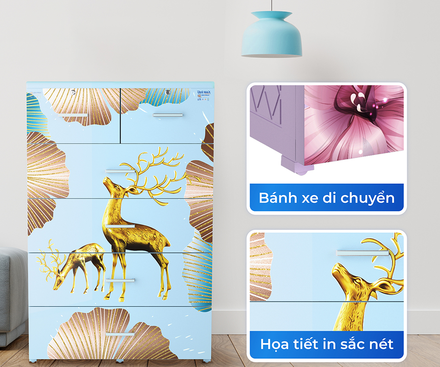

Tủ nhựa đa năng - Lựa chọn hoàn hảo đáp ứng mọi nhu cầu lưu trữ
Bạn đang đau đầu vì không gian sống bừa bộn, đồ đạc ngổn ngang? Bạn muốn tìm một giải pháp lưu trữ thông minh, tiện lợi mà vẫn đảm bảo tính thẩm mỹ? Tủ nhựa đa năng Qui Phúc chính là "phù thủy" biến hóa, giúp bạn giải quyết mọi vấn đề trên một cách dễ dàng.
Với thiết kế thông minh, đa dạng kiểu dáng và kích thước, tủ nhựa đa năng Qui Phúc không chỉ giúp bạn sắp xếp đồ đạc một cách gọn gàng, mà còn mang đến vẻ đẹp thẩm mỹ cho không gian sống.
 Tủ nhựa đa năng Qui Phúc - biến hóa không gian, lưu
trữ
mọi thứ!
Tủ nhựa đa năng Qui Phúc - biến hóa không gian, lưu
trữ
mọi thứ!
Tại sao nên chọn tủ nhựa đa năng Qui Phúc?
- Đa dạng mẫu mã, kiểu dáng:Từ tủ treo quần áo, tủ đựng hồ sơ, tủ đồ chơi cho đến tủ đựng đồ đạc gia đình, Qui Phúc có đủ loại tủ nhựa đa năng đáp ứng mọi nhu cầu của bạn.
- Chất liệu nhựa cao cấp:Tủ nhựa Qui Phúc sử dụng nhựa PP/ABS chính phẩm, không chứa BPA, an toàn cho sức khỏe, độ bền cao, chịu lực tốt, chống ẩm mốc, mối mọt.
- Màu sắc tươi sáng, hiện đại:Bảng màu đa dạng cùng nhiều họa tiết phong phú phù hợp với mọi phong cách nội thất và lứa tuổi sử dụng, giúp không gian sống thêm sinh động, tươi mới.
- Thiết kế thông minh, tiện lợi:Ngăn kéo rộng rãi, dễ dàng đóng mở, bánh xe di chuyển linh hoạt, có thể tháo rời các ngăn kéo dễ dàng, vệ sinh nhanh chóng.
- Giá cả hợp lý:Qui Phúc luôn cam kết mang đến những sản phẩm chất lượng với giá cả phải chăng, phù hợp với túi tiền của mọi gia đình.
 Tủ nhựa DELI MAX 5 tầng Qui Phúc có chiều ngang 9 tấc đựng được nhiều quần áo, đồ đạc hơn gấp 1.5 lần so với các loại tủ nhựa cùng loại khác trên thị trường
Mua tủ nhựa đa năng Qui Phúc ở đâu?
ạn có thể dễ dàng tìm mua tủ nhựa đa năng chính hãng Qui Phúc tại các cửa hàng, đại lý trên toàn quốc hoặc đặt hàng trực tuyến qua website quiphuc.com, các sàn thương mại điện tử. Đội ngũ nhân viên tư vấn nhiệt tình sẽ giúp bạn chọn được sản phẩm phù hợp nhất với nhu cầu.
Đừng chần chừ, hãy để tủ nhựa đa năng Qui Phúc "hô biến" không gian sống của bạn trở nên gọn gàng, ngăn nắp và hiện đại hơn!
- Website: https://www.quiphuc.com/collections/tu-nhua
- Shopee: https://shopee.vn/quiphucvn
- Tiktok: https://www.tiktok.com/@quiphuc.official
Kết luận
Tủ nhựa đa năng là giải pháp lưu trữ thông minh, giúp bạn tiết kiệm không gian, sắp xếp đồ đạc gọn gàng và mang đến vẻ đẹp hiện đại cho ngôi nhà của bạn. Hãy lựa chọn ngay một chiếc tủ nhựa đa năng phù hợp để trải nghiệm sự tiện lợi và tính thẩm mỹ mà nó mang lại!